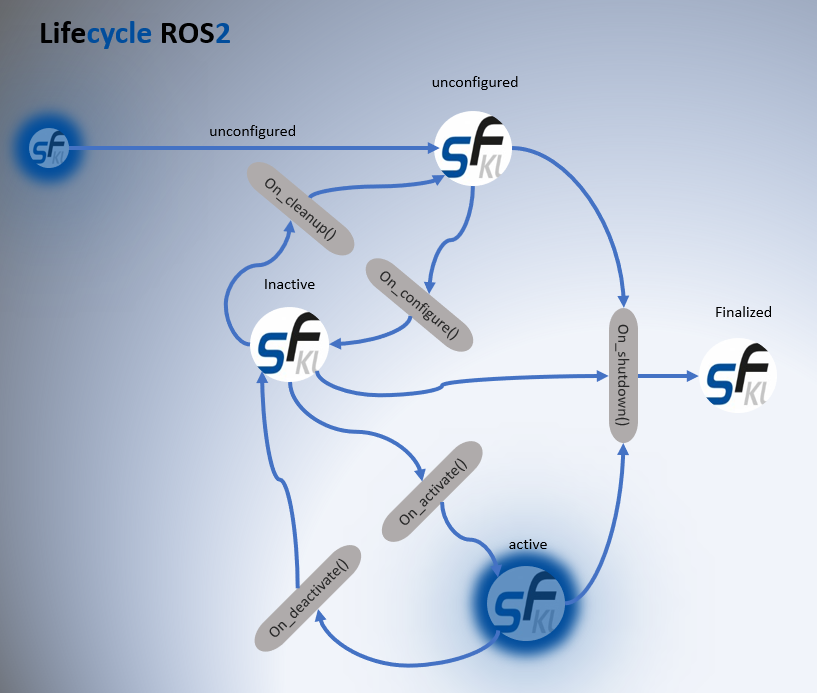

Lifecycle transitions on UR5e
State-machine-driven gripper control through activation, fault, and recovery.
C++ and Python ROS 2 action server and Lifecycle node for Robotiq gripper control on a UR5e — explicit state machines for activation, fault handling, and recovery, designed to integrate cleanly with higher-level manipulation pipelines.
State-machine-driven gripper control through activation, fault, and recovery.
